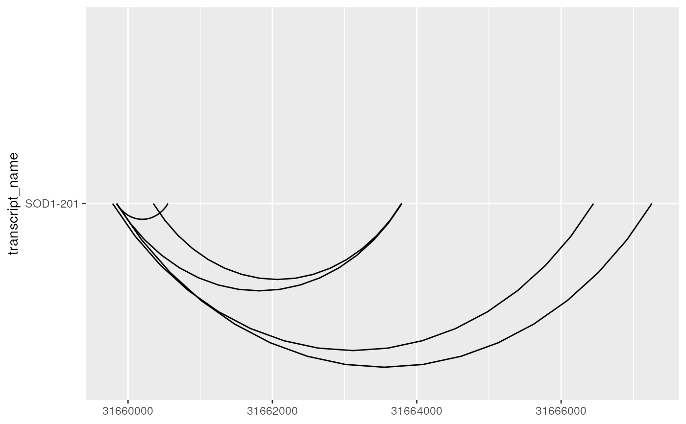
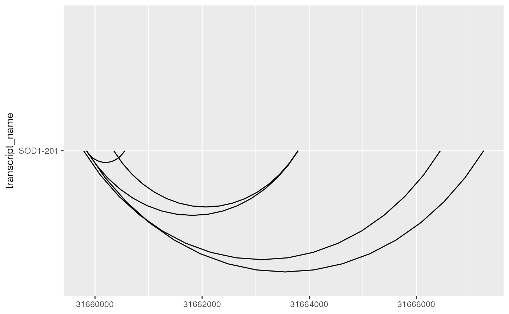
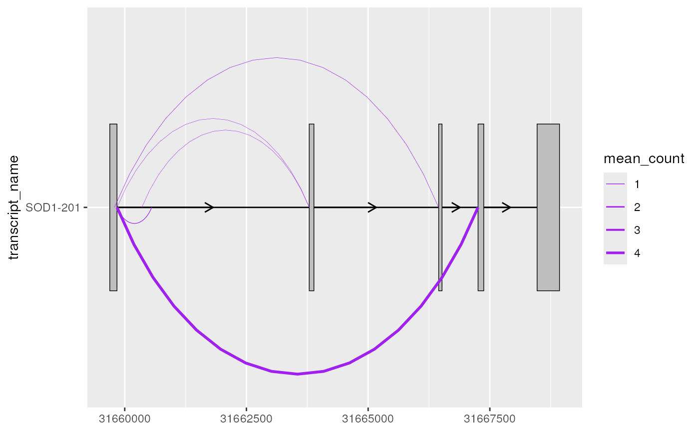
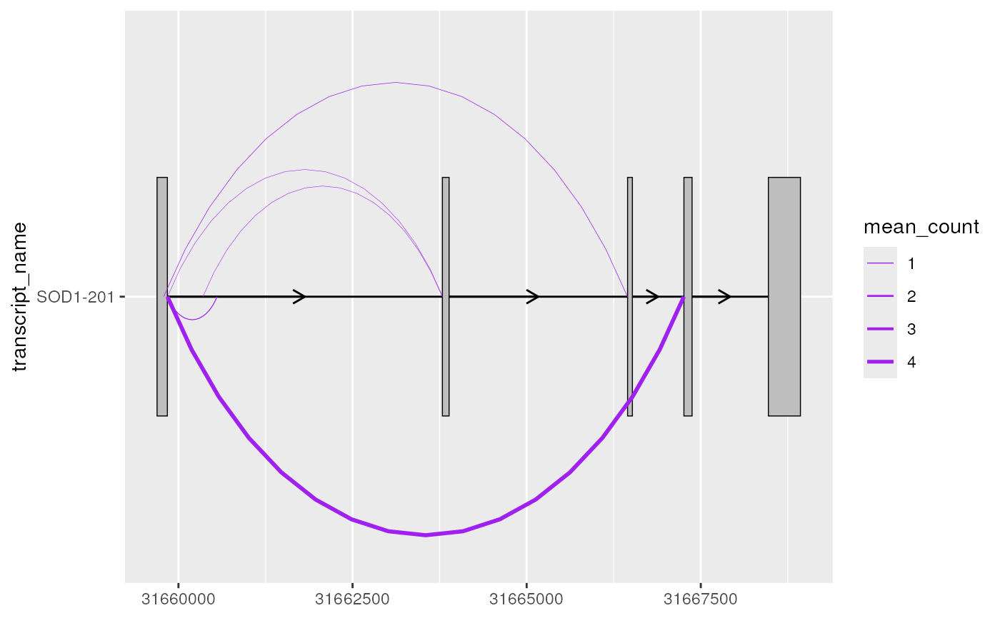

geom_junction() draws curves that are designed to represent junction reads
from RNA-sequencing data. It can be useful to overlay junction data on
transcript annotation (plotted using geom_range()/geom_half_range() and
geom_intron()) to understand which splicing events or transcripts have
support from RNA-sequencing data.
Usage
geom_junction(
mapping = NULL,
data = NULL,
stat = "identity",
position = "identity",
junction.orientation = "alternating",
junction.y.max = 1,
angle = 90,
ncp = 15,
na.rm = FALSE,
orientation = NA,
show.legend = NA,
inherit.aes = TRUE,
...
)Arguments
- mapping
Set of aesthetic mappings created by
aes()oraes_(). If specified andinherit.aes = TRUE(the default), it is combined with the default mapping at the top level of the plot. You must supplymappingif there is no plot mapping.- data
The data to be displayed in this layer. There are three options:
If
NULL, the default, the data is inherited from the plot data as specified in the call toggplot().A
data.frame, or other object, will override the plot data. All objects will be fortified to produce a data frame. Seefortify()for which variables will be created.A
functionwill be called with a single argument, the plot data. The return value must be adata.frame, and will be used as the layer data. Afunctioncan be created from aformula(e.g.~ head(.x, 10)).- stat
The statistical transformation to use on the data for this layer, as a string.
- position
Position adjustment, either as a string, or the result of a call to a position adjustment function.
- junction.orientation
character()one of "alternating", "top" or "bottom", specifying where the junctions will be plotted with respect to each transcript (y).- junction.y.max
double()the max y-value of each junction curve. It can be useful to adjust this parameter when junction curves overlap with one another/other transcripts or extend beyond the plot margins.- angle
A numeric value between 0 and 180, giving an amount to skew the control points of the curve. Values less than 90 skew the curve towards the start point and values greater than 90 skew the curve towards the end point.
- ncp
The number of control points used to draw the curve. More control points creates a smoother curve.
- na.rm
If
FALSE, the default, missing values are removed with a warning. IfTRUE, missing values are silently removed.- orientation
The orientation of the layer. The default (
NA) automatically determines the orientation from the aesthetic mapping. In the rare event that this fails it can be given explicitly by settingorientationto either"x"or"y". See the Orientation section for more detail.- show.legend
logical. Should this layer be included in the legends?
NA, the default, includes if any aesthetics are mapped.FALSEnever includes, andTRUEalways includes. It can also be a named logical vector to finely select the aesthetics to display.- inherit.aes
If
FALSE, overrides the default aesthetics, rather than combining with them. This is most useful for helper functions that define both data and aesthetics and shouldn't inherit behaviour from the default plot specification, e.g.borders().- ...
Other arguments passed on to
layer(). These are often aesthetics, used to set an aesthetic to a fixed value, likecolour = "red"orsize = 3. They may also be parameters to the paired geom/stat.
Value
the return value of a geom_* function is not intended to be
directly handled by users. Therefore, geom_* functions should never be
executed in isolation, rather used in combination with a
ggplot2::ggplot() call.
Details
geom_junction() requires the following aes(); xstart, xend and y
(e.g. transcript name). geom_junction() curves can be modified using
junction.y.max, which can be useful when junctions overlap one
another/other transcripts or extend beyond the plot margins. By default,
junction curves will alternate between being plotted on the top and bottom of
each transcript (y), however this can be modified via
junction.orientation.
Examples
library(magrittr)
library(ggplot2)
# to illustrate the package's functionality
# ggtranscript includes example transcript annotation
sod1_annotation %>% head()
#> # A tibble: 6 × 8
#> seqnames start end strand type gene_name transcript_name transcript_biot…
#> <fct> <int> <int> <fct> <fct> <chr> <chr> <chr>
#> 1 21 3.17e7 3.17e7 + gene SOD1 NA NA
#> 2 21 3.17e7 3.17e7 + tran… SOD1 SOD1-202 protein_coding
#> 3 21 3.17e7 3.17e7 + exon SOD1 SOD1-202 protein_coding
#> 4 21 3.17e7 3.17e7 + CDS SOD1 SOD1-202 protein_coding
#> 5 21 3.17e7 3.17e7 + star… SOD1 SOD1-202 protein_coding
#> 6 21 3.17e7 3.17e7 + exon SOD1 SOD1-202 protein_coding
# as well as a set of example (unannotated) junctions
# originating from GTEx and downloaded via the Bioconductor package snapcount
sod1_junctions
#> # A tibble: 5 × 5
#> seqnames start end strand mean_count
#> <fct> <int> <int> <fct> <dbl>
#> 1 chr21 31659787 31666448 + 0.463
#> 2 chr21 31659842 31660554 + 0.831
#> 3 chr21 31659842 31663794 + 0.316
#> 4 chr21 31659842 31667257 + 4.35
#> 5 chr21 31660351 31663789 + 0.324
# extract exons
sod1_exons <- sod1_annotation %>% dplyr::filter(
type == "exon",
transcript_name == "SOD1-201"
)
sod1_exons %>% head()
#> # A tibble: 5 × 8
#> seqnames start end strand type gene_name transcript_name transcript_biot…
#> <fct> <int> <int> <fct> <fct> <chr> <chr> <chr>
#> 1 21 3.17e7 3.17e7 + exon SOD1 SOD1-201 protein_coding
#> 2 21 3.17e7 3.17e7 + exon SOD1 SOD1-201 protein_coding
#> 3 21 3.17e7 3.17e7 + exon SOD1 SOD1-201 protein_coding
#> 4 21 3.17e7 3.17e7 + exon SOD1 SOD1-201 protein_coding
#> 5 21 3.17e7 3.17e7 + exon SOD1 SOD1-201 protein_coding
# add transcript_name to junctions for plotting
sod1_junctions <- sod1_junctions %>%
dplyr::mutate(transcript_name = "SOD1-201")
# junctions can be plotted as curves using geom_junction()
base <- sod1_junctions %>%
ggplot2::ggplot(ggplot2::aes(
xstart = start,
xend = end,
y = transcript_name
))
# sometimes, depending on the number and widths of transcripts and junctions
# junctions will go overlap one another or extend beyond the plot margin
base + geom_junction()
 # in such cases, junction.y.max can be adjusted to modify the max y of curves
base + geom_junction(junction.y.max = 0.5)
# in such cases, junction.y.max can be adjusted to modify the max y of curves
base + geom_junction(junction.y.max = 0.5)
 # ncp can be used improve the smoothness of curves
base + geom_junction(junction.y.max = 0.5, ncp = 30)
# ncp can be used improve the smoothness of curves
base + geom_junction(junction.y.max = 0.5, ncp = 30)
 # junction.orientation controls where the junction are plotted
# with respect to each transcript
# either alternating (default), or on the top or bottom
base + geom_junction(junction.orientation = "top", junction.y.max = 0.5)
# junction.orientation controls where the junction are plotted
# with respect to each transcript
# either alternating (default), or on the top or bottom
base + geom_junction(junction.orientation = "top", junction.y.max = 0.5)
 base + geom_junction(junction.orientation = "bottom", junction.y.max = 0.5)

# it can be useful useful to overlay junction curves onto existing annotation
# plotted using geom_range() and geom_intron()
base <- sod1_exons %>%
ggplot(aes(
xstart = start,
xend = end,
y = transcript_name
)) +
geom_range() +
geom_intron(
data = to_intron(sod1_exons, "transcript_name")
)
base + geom_junction(
data = sod1_junctions,
junction.y.max = 0.5
)
base + geom_junction(junction.orientation = "bottom", junction.y.max = 0.5)

# it can be useful useful to overlay junction curves onto existing annotation
# plotted using geom_range() and geom_intron()
base <- sod1_exons %>%
ggplot(aes(
xstart = start,
xend = end,
y = transcript_name
)) +
geom_range() +
geom_intron(
data = to_intron(sod1_exons, "transcript_name")
)
base + geom_junction(
data = sod1_junctions,
junction.y.max = 0.5
)
 # as a ggplot2 extension, ggtranscript geoms inherit the
# the functionality from the parameters and aesthetics in ggplot2
# this can be useful when mapping junction thickness to their counts
base + geom_junction(
data = sod1_junctions,
aes(size = mean_count),
junction.y.max = 0.5,
colour = "purple"
) +
scale_size(range = c(0.1, 1))

# it can be useful to combine geom_junction() with geom_half_range()
sod1_exons %>%
ggplot(aes(
xstart = start,
xend = end,
y = transcript_name
)) +
geom_half_range() +
geom_intron(
data = to_intron(sod1_exons, "transcript_name")
) +
geom_junction(
data = sod1_junctions,
aes(size = mean_count),
junction.y.max = 0.5,
junction.orientation = "top",
colour = "purple"
) +
scale_size(range = c(0.1, 1))
# as a ggplot2 extension, ggtranscript geoms inherit the
# the functionality from the parameters and aesthetics in ggplot2
# this can be useful when mapping junction thickness to their counts
base + geom_junction(
data = sod1_junctions,
aes(size = mean_count),
junction.y.max = 0.5,
colour = "purple"
) +
scale_size(range = c(0.1, 1))

# it can be useful to combine geom_junction() with geom_half_range()
sod1_exons %>%
ggplot(aes(
xstart = start,
xend = end,
y = transcript_name
)) +
geom_half_range() +
geom_intron(
data = to_intron(sod1_exons, "transcript_name")
) +
geom_junction(
data = sod1_junctions,
aes(size = mean_count),
junction.y.max = 0.5,
junction.orientation = "top",
colour = "purple"
) +
scale_size(range = c(0.1, 1))